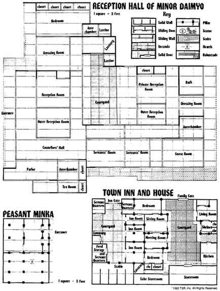
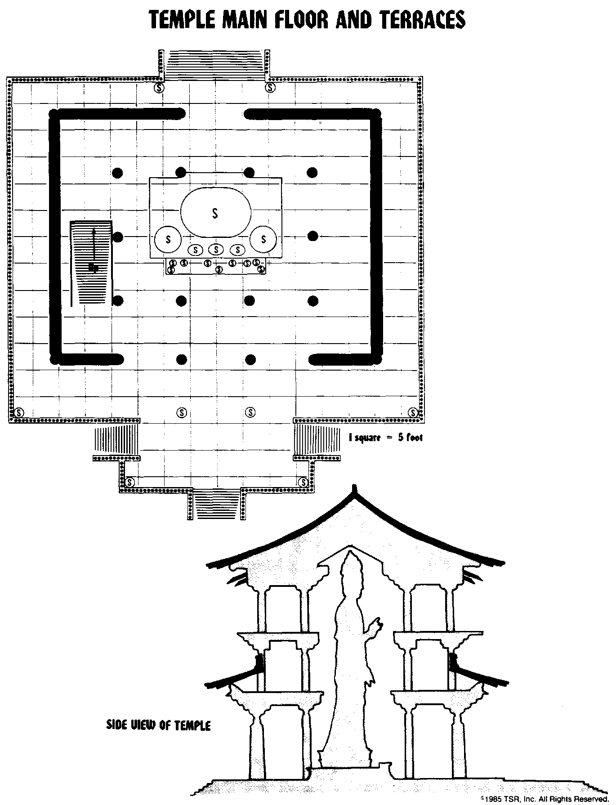

建筑平面图 · Building Floorplans
> 。建筑图保留原图的墙、门、网格、院落、房间位置与侧视关系；图中的英文标签在下方提供中文对照。
民家、小大名接待厅与城镇旅店兼住宅

三幅平面图的比例均为每格 5 英尺。小大名接待厅（Reception Hall of Minor Daimyo）位于图版上方；民家（Peasant Minka）位于左下；城镇旅店兼住宅（Town Inn and House）位于右下。
| 图例英文 | 中文 |
|---|---|
| Solid Wall | 实墙 |
| Sliding Door | 拉门 |
| Sliding Wall | 活动隔墙 |
| Veranda | 外廊 |
| Solid Door | 实门 |
| Pillar | 柱 |
| Statue | 雕像 |
| Stairs | 楼梯 |
| Hearth | 炉灶 |
| Balustrade | 栏杆 |
| 图中房间／设施 | 中文 |
|---|---|
| Entrance | 入口 |
| Closet；clo | 壁橱（clo 为缩写） |
| Bedroom | 卧室 |
| Antechamber；Ante chamber | 前室 |
| Latrine；Lavatory | 厕所 |
| Dressing Room | 更衣室 |
| Reception Room | 接待室 |
| Outer Reception Room | 外接待室 |
| Private Reception Room | 私人接待室 |
| Councilors' Hall | 顾问厅 |
| Courtyard | 庭院 |
| Bath | 浴室 |
| Servants' Room；Servant Quarters | 仆人房／仆人住处 |
| Guest Room | 客房 |
| Parlor | 会客室 |
| Tea Room | 茶室 |
| Inn Gate | 旅店入口大门 |
| Family Gate | 住宅入口大门 |
| Inn Room | 旅店客房 |
| Sitting Room | 起居室 |
| Living Room | 生活起居间 |
| Meeting Room | 议事室 |
| Shrine | 神龛 |
| Kitchen | 厨房 |
| Feed Storage and Servant Quarters | 饲料储藏兼仆人住处 |
| Stable | 马厩 |
| Sake Storeroom | 清酒储藏室 |
| Storeroom | 储藏室 |
寺庙主层、露台与侧视图

上图为寺庙主层及露台（Temple Main Floor and Terraces），每格 5 英尺；下图为寺庙侧视图（Side View of Temple），显示中央巨像穿越楼层的高度、楼板、屋顶与台基的关系。S 及圆圈内的 S 是雕像符号，其他建筑符号见上一图版的图例。